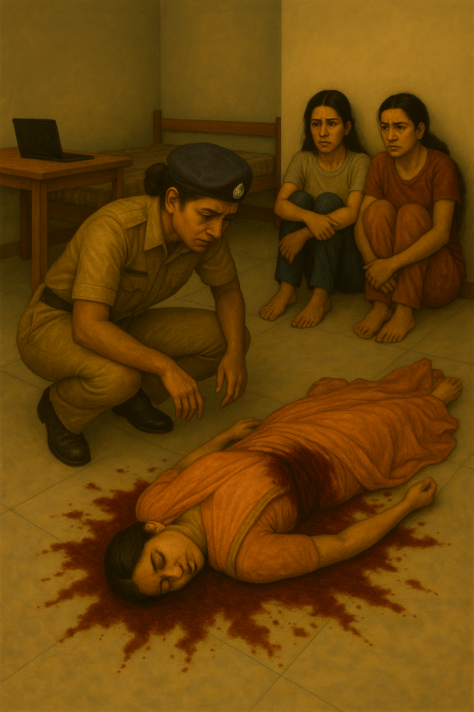

10: 30 PM
Red and blue sirens bled across the narrow corridor walls, the light flickering like an omen. The flat was already swarming with khaki uniforms. Neighbours crowded at the entrance, necks craning to get a glimpse of the body sprawled on the floor. Constables struggled to hold them back, shooing away both gossip-hungry aunties and over-eager pressmen with cameras.
"Please make way, CI coming through!" a constable barked, clearing a path.
Circle Inspector Avni Deshpande stepped in. Boots crunched over broken glass as she crossed the threshold. Her presence filled the room — calm, unhurried, but carrying the weight of someone who'd seen far too many dead bodies. Ten years in homicide had made her sharp, but never numb.
She crouched beside Saraswati's still form. One glance, and her voice came clipped, precise.
"One shot. Chest. Range… two, maybe three meters."

She exhaled, eyes narrowing, and glanced at the constable nearby.
"Family informed?"
The man shook his head. "No ID, no phone, nothing on her, madam."
The words rippled through the hall. No phone? No ID? Neighbours murmured, some whispering that the roommates had been fighting. Avni's gaze shifted — to Aditi and Shwetha, curled up against the wall, shivering as if the very air could bite.
She straightened and signalled to her officer. "Call forensics."
Then, slowly, she walked over to the two girls. Her boots stopped inches from them. Her eyes were steady, unblinking.
"Which one of you killed her?"
"We didn't!" The answer came in chorus, voices breaking.
"Don't play games with me." Her tone hardened, carrying a local bite. "Want me to let rats under your skirt to make you talk?"
They flinched.
"It wasn't me… it wasn't me," both whispered, voices trembling.
Avni leaned closer. "Quarrel? You fought with her?"
Before they could respond, a neighbour piped up from the doorway.
"Yes, madam! They were fighting. We heard it next door. After ten minutes—bang! Gunshot! That's when we rushed."
Avni turned sharply. "Did you see the shooter?"
The neighbour raised his palms. "No, madam. Only saw what you see now — dead body, these two girls sitting there."
Avni's eyes went back to them. The silence pressed heavy.
"No… it wasn't us," Aditi repeated, barely audible.
"Then where's the murderer?" Avni's voice cracked like a whip.
"An old man…" Shwetha's whisper floated.
Avni stepped in close, lowering her ear. "Say it properly."
Shwetha swallowed hard. "An old man… in a suit. He walked in, called Saraswati by name… then just—shot her. And left."
Avni's stare didn't soften. "Who was he?"
"We don't know," Aditi added quickly. "We'd never seen him before."
Avni flicked her fingers — orders sharp, efficient. Constables moved to pull CCTV footage, while forensic officers began their slow ritual: photos of the body, powder for fingerprints, evidence bags clicking shut.
"Run her prints through the database," Avni told the experts, her voice calm but edged. "Find out who she really is."
Then she turned back, her tone dropping to a dangerous softness. "Now… you will tell me everything. From the start. Clear, haan?"
The two girls nodded desperately.
Aditi began, her words stumbling into a flashback.
"Shwetha and I… we couldn't handle rent anymore. So we told the broker to find us a third roommate. That's how Saraswati came. Just this evening."
Avni snapped her fingers at Shwetha. "Broker's number. Give it. Call him here."
Shwetha fumbled with trembling hands, scribbled down the contact.
Aditi went on, voice breaking as the memory spilled out.
"She came in… we talked… she was curious about everything. Then she used the laptop. And… and that old man walked in, called her name… and—" her throat caught— "he shot her, before we even knew what was happening."
Shwetha buried her face in her knees, sobbing.
"We didn't even move… we were so scared… we didn't stop him, didn't catch him… nothing…"
The two collapsed into each other's shoulders, tears choking their words, while Avni Deshpande stood over them. Her face betrayed nothing, but her eyes carried the sharp glint of a woman already stringing threads together.